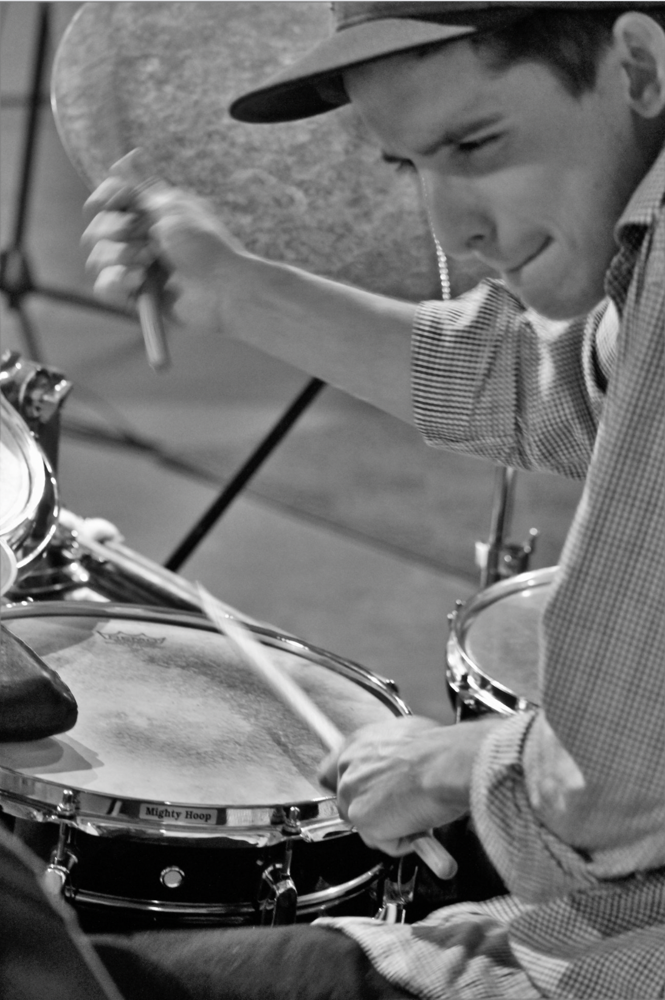
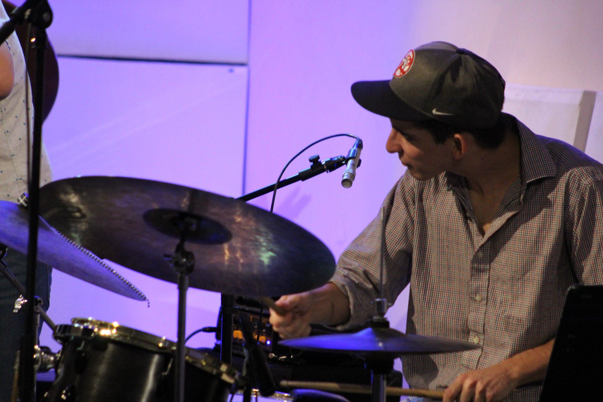

Zander Ambrose
About
"Mr. Ambrose developed into one of the most talented and technically proficient musicians that I have encountered. In addition to obvious musical gifts on his instrument, he developed an individual style, which is rare for someone of his age. His reading skills are impressive, and his ability to hear and retain musical elements make him a valuable asset to any musical group that he is associated with." - Stephen Rucker
Ambrose has always been passionate and comprehensive in his musical journey. In high school, Ambrose was highly involved in the Hartt School of Music Community Division at the Hartt School of Music in Hartford, CT. There, Ambrose was formally trained in classical percussion and drum set by his private teacher and mentor Sal Ranniello. Along with his private studies, he participated as a section percussionist for one year in the Greater Hartford Youth Wind Ensemble directed by Glen Adsit. He was then selected as the principal timpanist for the Connecticut Youth Symphony directed by Dr. Daniel D'Addio, where he was the sole percussionist in the group for two years. Upon his participation in this group, Ambrose received the Emmett Naczi Memorial Award for outstanding contribution by an underclassman. Ambrose also had a passion for individual recital performance and was selected upon audition to participate in the Community Division’s Woodwind, Brass and Percussion honors recital. After his performance, Ambrose was awarded the Beatrice Sewall Endowed Scholarship Honors as the distinguished recital winner given to the top scoring student in the recital.
Download Short BioBeyond his participation in the Hartt Community Division, Ambrose was quite active in the Regional and All-State opportunities that the Connecticut Music Educators Association (CMEA) provided. Ambrose was selected as the first chair section percussionist for the Northern Regional honor band and was again selected as the first chair percussionist for the All-State Honor Band directed by Samuel Hazo. As a junior, Ambrose was selected for the National Association for Music Education (NAfME) All-Eastern Honors Orchestra directed by Adam Glaser. In his senior year, Ambrose successfully auditioned for the Northern Regional jazz ensemble directed by John Fedchock and the All-State Jazz Ensemble directed by Michael Phillip Mossman. Along with this experience, Ambrose was selected as the first chair percussionist for the NAfME All-National Honors Ensemble directed by Dr. Peter Boonshaft and subsequently performed in Nashville, TN. Beyond his time spent participating in extracurricular music opportunities, Ambrose was a dedicated member of the High School Marching Band where he was the drumline section leader for two years.
Download Music ResumeAfter much thought and consideration, it was clear that Ambrose’s interest lied in his love for drumset and enrolled with a scholarship to the prestigious University of Miami, Frost School of Music in Coral Gables, Florida. Ambrose received his Bachelors of Music degree (B.M) in the Studio Music and Jazz program in the studio of his mentor Stephen Rucker in May 2018. As an undergraduate student, Zander played in the DownBeat award-winning Studio Jazz Big Band, the perennial DownBeat award-winning UM Funk/Fusion Ensemble where he and his ensemble received a Down Beat ensemble award and the multiple Grammy award-winning artist and faculty mentor Brian Lynch Artist Ensemble. Ambrose's passion for rudimental percussion persisted still and he participated for three years in the drumline in the Frost Band of the Hour Marching Band. He was awarded the drumline captain honors and center snare drum role for his junior and senior year. Upon completing his final season, he was awarded the For Greater Bands Award from the Gamma Epsilon Chapter of Tau Beta Sigma for his impact in the program, as well as the Band of The Hour’s most prestigious Most Valuable Player Award for outstanding contribution, given to one student at the end of each season. Ambrose was also an active member during this time in the winter drumline as well as the pep band where he played drums for the basketball and volleyball games.
In the Winter of 2018, Ambrose was awarded a full scholarship to pursue his Master’s Degree in Jazz Pedagogy from the University of Miami where he was selected as the graduate teaching assistant for the drum set studio under the direction of Steve Rucker. He was able to continue honing his craft both as a performer and educator. He was required to teach private lessons with undergraduate drum students, along with teaching group classes in the following subjects: drum set proficiency, jazz theory and improvisation, large ensemble conducting, jazz history and music appreciation, and small jazz ensemble coaching. In his masters program, Ambrose held the drum set chair in the Henry Mancini Institute Orchestra artistically directed by NEA jazz master Maria Schneider. This group was a big band jazz ensemble, and full orchestra combining the jazz and classical departments of the Frost School of Music. This prestigious ensemble represented the University of Miami in many high level performances. As a member of this group, Ambrose was able to perform alongside artists such as John Williams, Quincy Jones, Maria Schneider, Arturo Sandoval, Donny McCaslin, Dave Koz, Jose Feliciano, Tim Reis, Kristin Chenoweth, Matthew Morrison and Lucy Woodward.
During his time in Miami, Ambrose was a busy sideman and band leader as well as an in- demand music educator. He maintained a busy performing schedule playing all around South Florida. He maintained a church gig at St. John's Missionary Baptist church for two years where he was exposed to and performed Black American gospel music every Sunday, to which Ambrose cites as an invaluable learning experience. As an educator, Ambrose taught at Riviera Preparatory School as an assistant general music teacher and head drumline instructor. He was also an assistant drumline instructor at Coral Reef High School. He was active at Citrus Grove Middle School and Poinciana Park Elementary School for the non-profit organization Guitars Over Guns. Here the mission was to provide music education and mentorship to lower income communities. Lastly, Ambrose taught private lessons at Music Tech Studios in Pembroke Pines, FL where he taught one on one private lessons to students ranging from 4 to 17 years old.
Ambrose has studied with his mentor Stephen Rucker, Grammy award-winner, and MacArthur Fellowship recipient Dafnis Prieto, multi-Grammy award-winning artist and faculty mentor Brian Lynch, multi-Grammy award-winner Dr. John Daversa, Dr. Charles Bergeron, Martin Bejerano, and John Hart.
Ambrose has performed with John Williams, Quincy Jones, Arturo Sandoval, Maria Schneider, Brian Lynch, John Hart, Donny McCaslin, Veronica Swift, Jon Secada, Dave Koz, Lucy Woodward, Landau Murphy, Jose Feliciano, Kate Reid, Tim Reis, Matthew Morrison, Kristin Chenoweth, and Dave Damiani.
Beyond the music, Ambrose is a positive leader who looks to uplift those around him. Some of his other passions include cooking, reading, programming, real estate, personal development and constantly learning new skills.